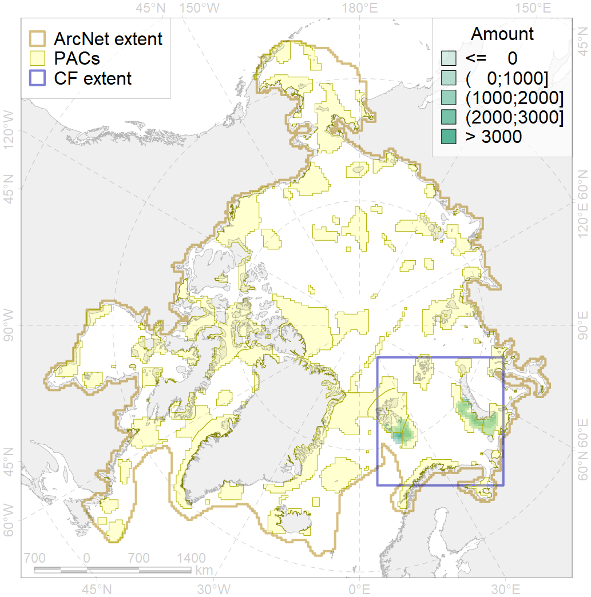
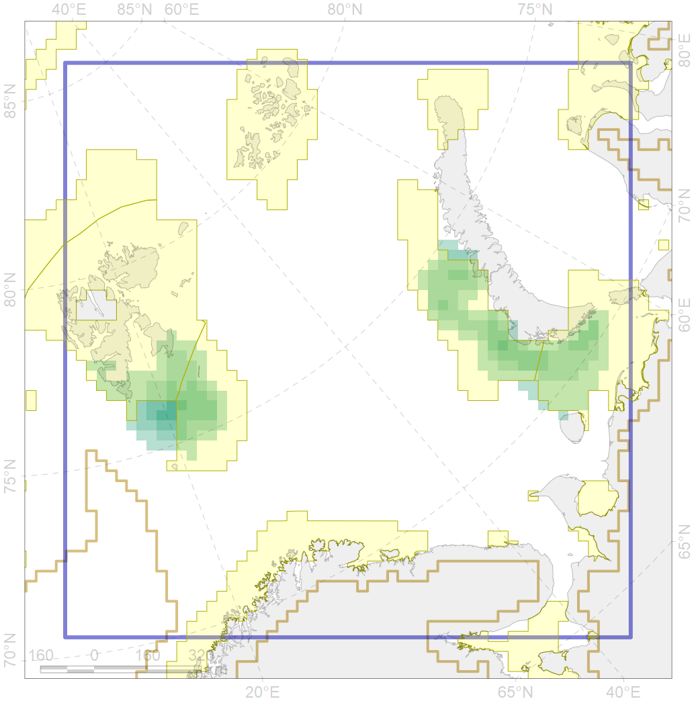

4040

| CF code | 4040 |
| CF name | Larvae distribution of the Polar Cod (Boreogadus saida) in the Barents Sea |
| Time Period | 1990s |
| Source(s) | A biodiversity assessment…, 2003 |
| Seasonality | Apr-June |
| Depth Horizon | 0-50 |
| Methodology | published field data, multiple source |
| Use Restrictions | Open sources |
| Author Name | N. Chernova |
| Notes | The data are from Gjosæter, Anthonypillai, 1995. |
| Scenario’s Target | 0.48 |
| Target Achievement | 0.834 (Scenario: 173.8%) |
| PAC | Share of the Total Amount within the PAC | Share of the Target Achievement for the ArcNet | PAC’s Contribution to the Target Achievement |
|---|---|---|---|
| 20 | 20.9%22.2% | 43.0%45.8% | 24.8%26.3% |
| 21 | 35.4%37.0% | 66.4%69.6% | 38.2%40.1% |
| 30 | 11.0%13.1% | 21.8%26.1% | 12.5%15.0% |
| 31 | 19.4%22.0% | 39.8%45.0% | 22.9%25.9% |
| inner | 86.8%94.3% | 171.0%186.5% | 98.4%107.3% |
| outer | 13.2%13.5% | 2.8%3.3% | 1.6%1.9% |
| † supplement values are for area consistence whereas principal values are for Accenter compatible gridded stats |